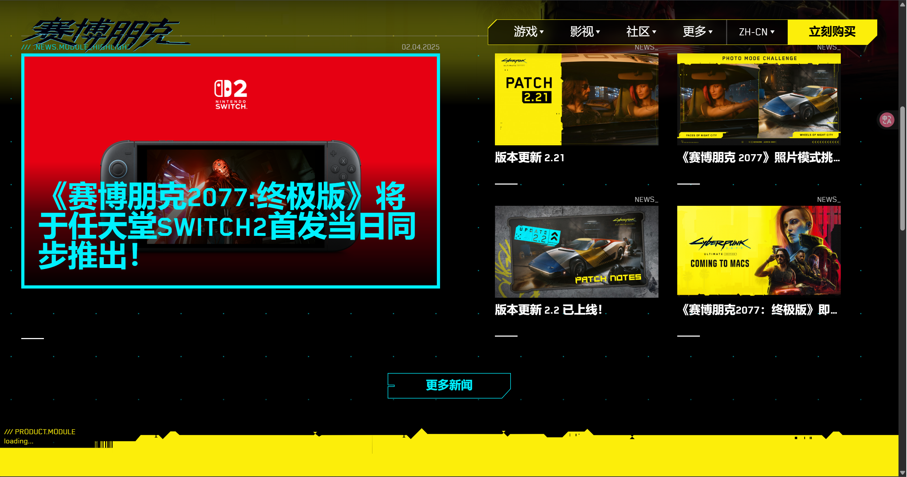
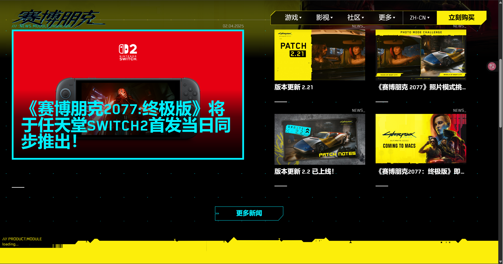
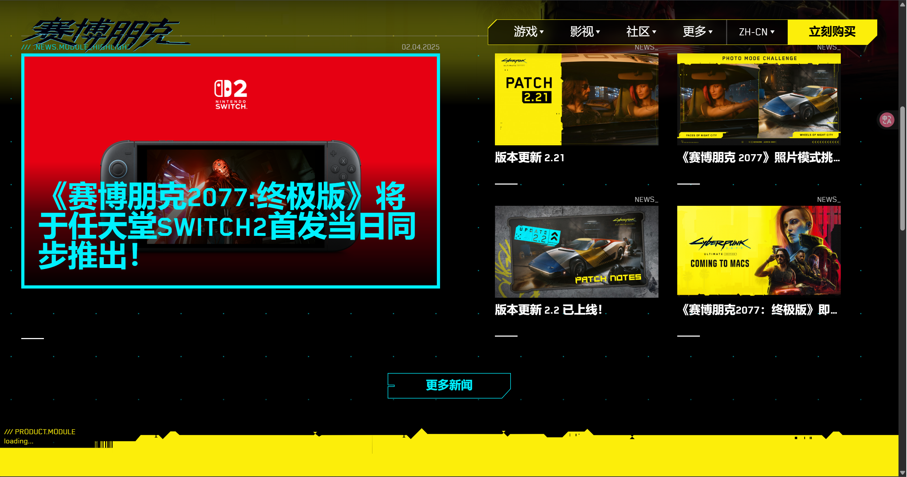

Reference diagram


 

The focus of this section of the Style Guide is ensuring the user has a good first impression of the site.
本节风格指南聚焦于打造用户对网站的第一视觉良好体验。

'Exo', serifh1:3rem, h2:2rem, p:1remnormal:400, bold:7001.60.5px这是一段文本示例，用于展示排版效果。This is a paragraph example to demonstrate typography.
h1 { font-family: 'Exo', serif; font-size: 3rem; font-weight:700; line-height:1.6; letter-spacing:0.5px; }var(--color-primary) (#0ff0fc)var(--secondary-color) (#3498db)var(--color-accent) (#ff007f)对比度 Contrast Ratios: Primary on background ≥ 4.5:1
max-width:1200px; margin:0 auto;--space-1:0.5rem; --space-2:1rem; --space-3:2rem;768px, 1024pxbutton { background:var(--color-primary); color:#111; padding:0.75rem 1.5rem; }16:9<img src="assets/sample.jpg" alt="示例图片" />